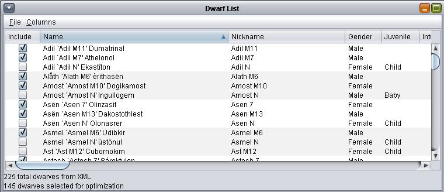
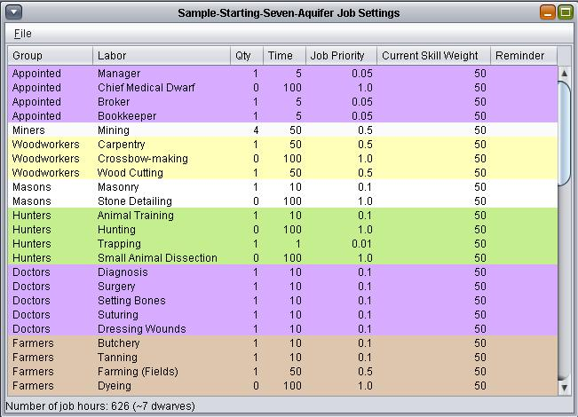

Table of Contents : Dwarf Organizer - v1.20 -
April 11, 2012
- Readme/Tutorial for Dwarf Organizer
- Prerequisites
- The Dwarf List
- Setting Up a Labor Profile
- The Time Column
- The Job Priority Column
- The Current Skill Weight Column
- The Reminder Column
- Number of Job Hours / Dwarves
- Always Save!
- The Optimizer
- The Log
- Optimized Jobs (The Results!)
- A Note About Altruism
- If you like the solution
- Keep in mind
- Things That Can Go Wrong
- Dwarves with no hands (or the
equivalent)
- Ghosts and the dead
- The caravan
- Juveniles
- Advanced Concepts
- Using the Exclusion Manager
- Blacklisting Jobs with the Rules
Editor
- Whitelisting Jobs with the Rules
Editor
- Non-Dwarves
- Custom Jobs
Readme/Tutorial for
Dwarf Organizer
[Return to Top]
Dwarf Organizer is a tool that can be useful to help distribute
labor among your citizens in Dwarf Fortress.
Disclaimer: Dwarf Organizer was originally written for personal
use, in my free time. It was worked-on in the very noisy
environment of my home. While working on it, I was often tired,
sometimes intoxicated, and frequently interrupted by household
members, burglars, policemen, repairmen, power and internet
outages, the general public, and a very friendly cat. As such, the
programming, interface, and overall finish do not reach the high
standards that my paid projects achieve! Dwarf Organizer is not
fully-featured, it is probably not totally foolproof, and it might
not do all the things you wish. That said, I use it a lot, and it
works so...
If you want to try it, this tutorial should get you started!
Prerequisites
[Return to Top]
1. You need Java. If your
computer has a web browser, then you probably already have it. If
you don't, you'll need to get it from http://www.java.com.
2*. Make an XML
export of your dwarves. You can use Runesmith
to create this export if you're using a pre-2012 version of
DF. Otherwise, install DFHack,
run your fortress, and type the following into the DFHack console
without the quote marks: "dwarfexport k:\dwarves.xml".
(Replace the drive letter, folder, and file name with your
preference.) Call the file anything you like, as long as you can
find it later.
3*. Run Dwarf Organizer, find the window
called "Dwarf List", and choose File->Set Location of
Dwarves.xml from the menu. Navigate to dwarves.xml (or
whatever you called it in Step 2) and click Open.
*If you would just like to try out Dwarf
Organizer without using Runesmith or DFHack, there are a couple
sample dwarves.xml files included with the program in the
samples\dwarves\ directory. (It should open by default, but on
Windows Vista, it doesn't.)
If you followed these steps without problems, then you are ready
to use Dwarf Organizer!
The Dwarf List
[Return to Top]
If your XML file loaded successfully, then you will see that the
window titled "Dwarf List" has some entries in it. You
might recognize the names of your dwarves there. (Your list will
be different from mine, pictured right.)
Use the "Columns" menu to view more (or less) information about
your dwarves.
"Include" is the only column you can edit directly. This tells
Dwarf Organizer which dwarves you want to assign labor. Use the
right-click context menu to include or exclude all selected
dwarves. See Using the Exclusion
Manager for more information about automatically excluding
dwarves.
Setting Up a Labor
Profile
 [Return to Top]
[Return to Top]
Next you need to set up a labor profile that works for the number
of dwarves you have. For example's sake, let's look at the
Sample-Starting-Seven-Aquifer profile. To do that, go to the "Job
Settings" screen (Window->Job Settings) and choose File->Open.
Open Sample-Starting-Seven-Aquifer.txt
(in the Samples\Jobs\ directory) using the dialog that follows.
This profile is more complex than what you may want to do with
Dwarf Organizer, but it's good for an example.

So now the Job Settings window should be populated with some real
data. It is a colorful window that is probably behind the Dwarf
List window. Bring it to the front by clicking on it or by
choosing Window->Job Settings, if you haven't already. I will
explain the contents of this window now:
The Job Settings window contains a table with some columns. Jobs
are color-coded by group, similar to the way DF organizes labor.
Some of the cells in this table can be edited.
In the Job Settings table, "Labor" corresponds with the labor
names you are familiar with in DF. "Qty" is the number of
different dwarves you would like to assign that labor. You can
see, for example, in the Sample-Starting-Seven-Aquifer profile
that we are not choosing a Chief Medical Dwarf, and that we are
choosing four Miners.
The Time Column
[Return to Top]
"Time" might require some thought depending how you like to run
your fortress. This column should only contain whole number values
between 1 and 100. The "Time" value represents the percentage of a
dwarf's time you imagine a job will consume. A value of 100 in
this column indicates that you would like this job to be the only
job a dwarf is assigned from this program. A value of 50 means you
think this job will take up 50% of the dwarf's time. If a job has
a value below 100 here, then a dwarf could be assigned multiple
labors, as long as those labors do not add up to more than 100
Time units. You can see, for example, that we have Time=5 on the
Bookkeeper position. (This file is from DF2010, when Bookkeeping
took very little or no time at all.) Time = 5 means this
Bookkeeper may do other jobs as long as they do not total more
than 95 time units.
Remember to use common sense when you are filling out the
“Time” column. Some jobs, like mining, can take up a huge amount
of a dwarf's time (depending on how you manage your fort, of
course). A miner will often not go and do other things if there is
some mining to do nearby. You can control this problem from the
Dwarf Organizer side, somewhat, by keeping the Time value high for
jobs that you know are very time consuming. Also keep "Time" high
for jobs you want to take high priority in your fortress.
If you have no idea what to do with the Time column, just leave
the values at 100 until you have a better idea of what you want.
The Job Priority
Column
[Return to Top]
"Job Priority" is a decimal value that should contain the "Time"
value divided by 100 in most cases (unless you are very sure about
what you are doing). So, a good rule is, if "Time" contains 50,
then "Job Priority" usually contains 0.5. When you edit the Time
column, the Job Priority currently does not adjust. You'll have to
do that by hand.
In the optimizer, "Job Priority" is used to adjust the priority
for filling a job. The best-suited dwarves will be chosen for the
highest-priority jobs first. If you set Job Priority lower, the
job you changed will be less important to the optimizer.
Let's say you have a position that does not take up a lot of a
dwarf's time, but you still want a really well-suited dwarf in
that position. That is what Job Priority is for. Increase this to
1.0 (or higher if you like) to improve the match-up of a good
dwarf for this job.
In the Sample-Ishlumas-200-Plus file (if you want to follow
along: choose Job
Settings->File->Open->Sample-Ishlumas-200-Plus.txt) you
can see that Carpentry is only a 50 Time job, but the Job Priority
is set to 1.0 so that the Carpentry dwarves are chosen as if it is
a more important job. Masonry and Stone Detailing are also set to
high importance in this way.
Remember, if you want to set priorities, then setting the Job
Priority high for too many jobs is not helpful. If everything is a
high priority, then nothing is a high priority!
Finally, if you are not sure, just set Job Priority to Time /
100.
The Current Skill
Weight Column
[Return to Top]
Current Skill Weight should contain whole numbers between 0 and
100 only. This value tells the optimizer how to balance a dwarf
with a high skill level in a particular labor but very poor stats
for it, against a dwarf who just has good stats for that labor
(but no skill level in it). You will want to decide how you want
to set this up for your own fort. An example:
In the Sample-Ishlumas-200-Plus job profile, many jobs are set to
a Current Skill Weight of 50. This means that a dwarf who has
skilled 80% to the maximum skill level in a labor, and has very
poor stats for it, will receive roughly equal priority to a dwarf
who has nothing but a skill potential a little over 80% in that
labor. A Current Skill Weight of 100 means that dwarves are
considered for that job based only on their current skill level,
ignoring stats entirely. And, a Current Skill Weight of zero means
that skill levels are ignored, and only stats are considered for
the position.
So, as the Current Skill Weight value approaches 100, current
skill levels become increasingly important, and good stats become
less important. This column is how you tell Dwarf Organizer
whether you generally want to use, for example, the recent
Talented migrant weaponsmith who has terrible smithing stats, or
to train up a new Dabbling Weaponsmith who has great smithing
stats. It's up to you!
Note that setting Current Skill Weight to values below 100 causes
jobs to be exchanged between low-skilled dwarves more often when
optimizing, especially in younger forts. This is because many
dwarves will have very low skill levels and stats. As Current
Skill Weight falls below 100, the optimizer sees next to no
difference between Urist McDabbling and Urist McNovice.
Here is a chart to help with editing this column:
Current Skill Weight
|
Meaning
|
100
|
Only skill level matters
|
51 to 99
|
Skill level matters more than
stats
|
50
|
Skill level and stats matter
"equally"
|
1 to 49
|
Stats matter more than skill
level
|
0
|
Only stats matter
|
The Reminder Column
[Return to Top]
Anything you enter in the "Reminder" column will appear on the
optimizer results screen when a dwarf is assigned (or unassigned)
that labor. For example, I use workshop profiles for my masons.
When I take a new mason, I need to remember to add him to a
profile. So in Dwarf Organizer I write "Workshop" under Reminder,
on the Masonry line.
Another example is that in the Ishlumas fort, I have a farmer's
cottage which I assign to the current farmer. When the farmer
changes, I want to remember to update the assignment of the bed in
the cottage, so I write "Farmer's Cottage". I also write “Burrow”
for any jobs associated with burrow assignments, such as my miller
or cooks. (Just leave this column blank if you don't want to be
reminded about anything.)
Number of Job Hours /
Dwarves
[Return to Top]
Below the Job Settings table, there is some text that says
something like: "Number of job hours: 9999 (~99 dwarves)". This
constantly updates as you edit the table, and it summarizes your
entries. You might want to keep an eye on it. If the estimated
number of dwarves is higher than the number of dwarves you have
selected on the Dwarf List screen, then the optimizer probably
won't be able to run. If this happens, adjust your "Qty" and
"Time" columns, and/or the number of dwarves selected in the Dwarf
List, until the optimizer is able to run.
Always Save!
[Return to Top]
Remember to save your job profile, using the Job Settings menu.
These profiles can take effort to set up exactly how you want
them, and you don't want to lose that! I usually name mine with
the fort and number of dwarves, such as "Nutscaves-119", or I give
it a name like "Starting Seven" if it's a very general profile.
There should also be an existing job profile called "MY DEFAULT
SETTINGS" which you can save over if you like. (You can always
revert to the original defaults by loading the read-only "DEFAULT
SETTINGS".)
The Optimizer
[Return to Top]
Choose Process->Optimize Now! from the main menu.
Depending how powerful your computer is and how much work you gave
the optimizer to do, a log window should appear immediately and
the results window will appear soon.
How it works, basically:
The optimizer starts with a random distribution of labor. This
distribution receives a score based on how well-suited each worker
is to their randomly assigned job(s), and how important those jobs
are. The optimizer then improves the labor distribution repeatedly
by swapping jobs around, until it cannot find another solution
with a higher score. At that point, it will stop and report the
best results it found. You can improve the optimizer's chances of
finding the best solution possible by following my two
tips:
Tip #1: Don't use lots of small Time values (in Job Settings)
with 100% full-time employment across a large fortress.
Tip #2: Don't employ 100% of your fortress population in a large
fortress.
The more "loosely packed" the labor distribution "puzzle" is, the
more likely the program will find a great solution.
You will still get a good solution (considering what the
optimizer had to work with) even if you completely ignore the tips
I just gave you, so feel free to experiment. (When I say "good", I
mean it's probably better than I can do in a reasonable amount of
time by hand. Our brains are different so your results may vary!)
The Log
 [Return to Top]
[Return to Top]
One of the windows opened by the optimizer is called "Log". It
should frequently update to let you know that the optimizer is
still alive. If there is an error or some kind of crash, this
window will probably let you know about it. (That is the idea,
anyway.) Otherwise, its contents are probably not incredibly
important to you.
Optimized Jobs (The
Results!)
[Return to Top]
The most important window from the optimizer is called "Optimized
Jobs". This contains the results of the optimization:
The "Dwarf" column contains the names of your dwarves. You will
see everybody that had a check mark under "Include" on the Dwarf
List here, even if the optimizer found no work for them.
"Scheduled" contains the total time units that the optimizer has
assigned to that dwarf. The "Job" column contains the optimizer's
suggestions for changing the labors assigned to each dwarf.
(The strange first-name duplication seen in this picture is
caused by a problem in DFHack.)
For example, for the dwarves I just "optimized", let's examine
the results for Catten Regidrath (seen as "Catten Catten
Regidrath" above):
+Bookkeeper (12)
|
|
+Mining (23)
|
|
-Masonry(13)
|
|
-Stone Detailing(14)
|
|
-Mechanics(8)
|
|
-Architecture(5)
|
The plus sign means add a labor, and the minus sign means disable
a labor. You also might find an equals (=) sign, like for Eshtan's
Mining. This means the labor is already enabled, and the optimizer
suggests leaving it this way.
So the results above are telling me that the optimizer thinks I
should make Catten a miner, and disable some of these other
labors, because other dwarves looking for work can do them better.
The numbers in parentheses next to labors correspond with the
"Potentials" in the Dwarf List window, but they are weighted by Job
Settings. For example, Mining(23) means that Catten has been judged
by the optimizer to have a Mining value of 23. This value does not
mean anything except when we compare it with other dwarves' Mining
Potentials. These numeric values might help you to understand the
reasons for the optimizer's decisions.
If you see any results that require further investigation, the
Dwarf List and Job Settings windows can display all the values
that were used to calculate the numbers here. And, the file
"list-explanations.txt" in the "config" folder contains the source
and calculation method for every column that can appear in the
Dwarf List.
The "Reminder" column will contain anything you wrote under
"Reminder" in the Job Settings. And finally, "Score" is a weighted
value. It was summed and used to rank this solution. Dwarves with
higher Scores probably have the best stats, and will have received
priority for the most important jobs. "Score" is probably only
important to you if you are really interested in what jobs and
dwarves the program decided were the most important.
There are also some options at the bottom of the screen. You can
set some filters from the menu (not pictured) and the radio
buttons at the bottom of the list.
A Note About
Altruism
Dwarves with low Altruism get an unhappy thought when they rescue
people, or give food or water to others. The Optimized Jobs screen
currently reminds you to disable these two labors when it notices
a low-altruism dwarf.
If you like the
solution
[Return to Top]
If you like the solution, you can now use it to set labors
manually in Dwarf Fortress, or use a memory writer like Dwarf
Therapist. Dwarf Organizer does not write its results into Dwarf
Fortress. Only you have the power :)
Keep in mind
[Return to Top]
Most jobs in Dwarf Fortress use a small number of similar or
identical stats. For example, Masonry, Engraving, and Tanning
(just to name a couple) each share their stats with many other
jobs in many fields. Dwarves with the best averages in these stat
groups will often be assigned as much work as the optimizer can
cram into them, leaving many other dwarves idle. If you are
finding your best workers overworked, you can try changing the
Time settings for jobs, or adding jobs to the blacklist or
whitelist (see below).
Another thing you can do is, just not allow the optimizer to
assign jobs that don't really matter in your fort, and manually
give those jobs to dwarves with nothing to do. For example, many
labors such as Lye Making and Brewing can only be done faster at higher skill
levels. (The information isn't centralized in one article anywhere
that I know of, but you can find out about labors, the skills
involved, and product quality at the Dwarf
Fortress wiki.) There is no product quality to worry about
for these labors. So in my forts I often assign all the
"non-quality" labors to workers with low stats. The optimizer is
only involved, in these cases, to help identify which dwarves
these are.
Things That Can Go
Wrong
Dwarves with no
hands (or the equivalent)
[Return to Top] There
are only a couple of labors that dwarves who are missing
hands/arms (or have no feeling in them) can do. Dwarf Organizer
currently cannot detect that a dwarf has no hands/arms. There are
two options to avoid assigning labor to these guys: 1) Add them to
the Exclusion Manager; or 2) in the
Dwarf List, uncheck the "Include" box for these guys before
optimizing. Otherwise the optimizer will try to give them a job
that will make them spam annoying red error messages in DF. We
wouldn't want that.
Ghosts and the
dead
[Return to Top] Ghosts
in your fort (and dead citizens, in DF2012) may appear in
dwarves.xml. Both the Runesmith and the DFHack exports have this
problem. Dwarf Organizer cannot tell the difference between a
ghost, a dead citizen, and a real live citizen. You must add
ghosts and your dead to the Exclusion
Manager, or manually exclude them in the Dwarf List.
The caravan
[Return to Top] If you
export your dwarves with Runesmith while the trade caravan is
around, then the caravan members will be included alongside your
citizens. DFHack might do this as well; I haven't tested. This can
make things very confusing. One option is, you can manually
exclude all these caravan people, unchecking them one by one. Or,
what I recommend is, just avoid
exporting your dwarves to XML until after the caravan is gone.
Juveniles
[Return to Top] Dwarf
Organizer will, by default, attempt to exclude juveniles (because
they can't be assigned normal labor unless you are cheating). But
for now, there are still nasty bugs in DF 2012 with calculating
the ages of dwarves. It is likely that some citizens will be
categorized incorrectly if you are running DF 2012. You may have
to use the Include checkbox in these cases.
Advanced Concepts
Using the
Exclusion Manager
[Return to Top] Currently dwarves.xml will
contain dead and crippled dwarves, and other dwarves you might not
want to assign labor (for whatever reason). Especially in violent,
plagued, or older forts, the process of manually excluding all
these guys can become tedious. To simplify this process, we have
the Exclusion Manager. Go to Window->Exclusion Manager to view
it.
(Figure
1: The Exclusion Manager)
Your screen will look very similar to the picture, the first
time. This is the Exclusion Manager for a large fort with a lot of
children and babies in residence. You can see that there is an
active exclusion rule called "Juvenile" for citizens aged below 13
years. You can change this rule by double-clicking on it, changing
the controls, and pressing Update when you're done. (It might be
better to just add a new rule, though.) You can also delete this
rule if you always run sweatshops--or you can just uncheck the
"Active" box if only this particular fort is a sweatshop, for
example.
In this particular fort, I have a few exclusion-related problems
besides my 103 children. First, this fort has several walled-up
vampire citizens. Vampires have awesome stats, so Dwarf Organizer
is always eager to assign them labor if I allow it. Let's stop
that from happening.
(Figure
2: Excluding vampires)
I assign all my vampires a nickname with the word "Vampire" in it.
So above, I have started creating a rule about nicknames, which
will apply to all my forts.
(Figure
3: It worked)
After I press [Enter] to add this rule, it shows up in the list. I
can see that my new rule affects six citizens in this fort, and
the list to the right displays the vampires. Great, on to the next
problem!
Early in this fort's history we had an ambush that resulted in a
death. Then, a few years later, a soldier went into the prisoner
execution chamber without his helmet, and got, well...that was
fatal. For a few years of fort history, manually excluding my dead
from the optimizer might have been fine. But then, one night I was
managing my fort while really tired, and I told some kid to pull
the spike repeater lever while Team Janitor were cleaning up
outside around the spikes. We had a whole bunch of deaths before I
noticed what was going on. It was way too many for me to remember
all their names. Long story short: let's exclude these dead people
forever.
For this we
will use the "Exclusions by list" section of the screen. This
section is for excluding groups of dwarves by their full names,
instead of by traits. (There's no trait in the export file for
"dead", and in DF 2012 we can't change other attributes, like
nicknames, after death.) We have to be careful when we do this,
because sometimes dwarves in different forts over time will have
the same names--but exclusions are shared. I will type the name of
my fort ("Earthsplatter") as part of the list name, so that I
remember to deactivate this list when I'm looking at a different
fort.
Now we have a
new, active, empty list called "Earthsplatter Dead". Next, we need
to add our dead citizens. To do this, first I make sure the
correct list is highlighted, and then go into Dwarf Fortress,
bring up this fort's list of Dead/Missing units, comb through it
for dwarves, and add them one-by-one to the list. (Remember, you
can type the first few letters of a name to scroll the list.)
There we go, 13 dead citizens. Now we press the very important
"Save and Apply" button (or alternately, go to File->Save and
Apply). This will save all our exclusion rules and lists, and it
also updates the "Include" column in the Dwarf List.
Remember: you can deactivate an exclusion rule or list at any
time by just un-checking the Active column, and then doing Save
and Apply. So you can do some fairly creative things, like setting
up lists by migration wave or whatever other conditions you like.
We
can see that after saving and closing the Exclusion Manager, the
Dwarf List reflects my changes in a few places. The "Exclusion"
column shows the active exclusions for each citizen, and "Inactive
Lists" would show any inactive exclusions. Also, at the very
bottom of the screen we see the reminder: "3 active exclusion
rule(s)".
You can always override anything the Exclusion Manager has done,
by changing the "Include" column yourself.
Blacklisting Jobs
with the Rules Editor
[Return to Top]
Sometimes you might want to set the Time value for a job to be a
low value, but you don't want certain other jobs to be given to
the same dwarf who does that job. For this we have the blacklist.
To view the blacklist (and whitelist, covered next), go to Window->Rules Editor in the
main menu. (Alternately, you can very carefully edit rules.txt in the "config"
folder in your DwarfOrganizer directory.)
The Edit Rules screen
displays all the entries in your Rules file. To edit your rules, use the controls
near the bottom of the screen. (This screen is currently suffering
some problems with resizing and alignment. You might have to make
the window larger to see everything.)
To add a new blacklist entry, type an optional comment in the
Comment box. Choose "BLACKLIST" from the Rule Type dropdown box,
and select the two labors from the Labor dropdown boxes. A
sentence will appear at the bottom of the screen, describing the
entry you are making. To confirm your new entry, click "Add New".
You can delete entries by highlighting them and pressing the
Delete key, or by choosing "Delete" from the right-click menu. (Be
careful: there is not an Undo function at this time.) You can also
copy (Ctrl+C) or edit (Ctrl+Enter or double-click) entries, using
the right-click menu or shortcut keys.
Choose File->Save from the menu when you are done making
changes. (Alternately, just close the Edit Rules window and choose
Yes when the program asks if you want to save.)
Remember:
Blacklisting jobs is great, but it might increase the number of
dwarves needed to fill your job profile.
Whitelisting Jobs
with the Rules Editor
[Return to Top] Let's
say you have a job so important that you want the dwarf doing it
to only have certain other possible labors. You *could* blacklist
most of the jobs in the world from that important labor. This
would mean adding a lot of rules. Alternatively, you could make a
whitelist entry, to show which other jobs are allowed with the
important job. (See Blacklisting Jobs
for general information about using the Rules Editor.)
For example, my Rules file contains the following entries,
because I have trouble keeping my diagnosticians on track.
This means my doctors with Diagnosis are only allowed to do the
other four labors listed (Surgery, Setting Bones, Suturing, and
Dressing Wounds).
Unlike blacklist entries, which can list labors in any order,
whitelist entries have to list the labor you are limiting first.
In the example above, Diagnosticians are allowed to do Surgery,
but Surgeons are allowed to do anything they want (unless
they are also doing Diagnosis). The text description at the bottom
of the screen may help, if you get confused.
Currently everything you do in Dwarf Organizer shares the same Rules
file. If you are running multiple forts, be careful what you limit.
Non-Dwarves
[Return to Top] Lots
of people like to run forts/castles/treehouses/etc. with some
other race that is not dwarves, and I have called everything
"dwarves" here. This is mostly only a convenience. There is one problem using
Dwarf Organizer for non-dwarves that I know of. The "Potentials"
might look weird, since they are based on average starting *dwarf*
stats, and the current skill vs. potential weight will be thrown
off by this. I recommend that if you are running a fort of
non-dwarves, that you use either 100 (only use current skill) or 0
(only use potential) for each of your Current Skill Weight values
on the Job Settings screen.
Custom Jobs
[Return to Top] I have
been looking at ways to support custom jobs very elegantly, such
as reading in custom jobs from Dwarf Therapist and letting those
be used. Until/unless I manage that, for now, the solution is
creativity. Here are examples.
I use a custom Dwarf Therapist job for dwarves whose stats are
too low to do serious work in my fort. Anybody who comes out with
a "Scheduled = 0" in the Optimized Jobs list during a routine
migrant optimization, gets assigned to the custom job.
In one fort I also used a group of low-end masons, that also did
some other jobs when I didn't need them doing backup Masonry. To
do this, in my Dwarf Organizer Job Settings, first I find a job I
don't otherwise use in that fort which uses the same stats as
Masonry, such as Pottery (its stats are unknown but the optimizer
is estimating it to work like Masonry until it is known. I know
this because I am the programmer...and it is in
list-explanations.txt). So then I set Pottery to 100 Time units,
0.1 Job Priority (low priority), and quantity is set to the
appropriate value for the portion of the population I want.
Anybody who comes out assigned to "+Pottery" gets the special job
in Dwarf Therapist. This has the effect that the best masons are
chosen out of my otherwise-weaker dwarves.
But, let's assume I am actually running some potters in this
fort, and I am using all the jobs that share stats with Masonry.
And let's assume I want to train up some actual professional
masons to make masterwork statues. In this case, I can run the
optimizer once to just find my important masons (don't forget to
turn up the Job Priority). Then exclude them in the Dwarf List,
readjust the Job Priority, and optimize again to sort out the rest
of the citizens.
This should become less brain-taxing if/when I finish the real
interface to Job Settings, but for now that's what we have.
Have Fun!!